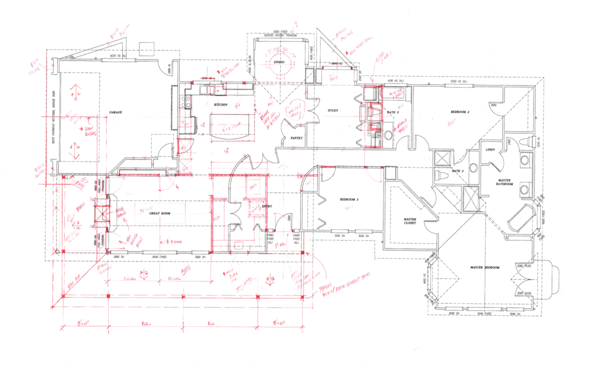

project goals
The objective for this project was to design a product that acts as a solution to key problems and market gaps in the home renovation industry. A purposely vague initial objective allowed for the development of a problem/need-based solution that is highly tailored to customer desires.
